Interactive Elements
In-text link
Sample code:
<p>I want to see the <a href = "#" class="text-link">project roadmap</a> and explore other sections!</p>
Rendered element:
I want to see the project roadmap and explore other sections!
Navigation Link
CSS selector:
.button-nav
Sample code:
<a href="#" class="button">my projects</a>
Rendered element:
my projectsView Project Buttons
Sample code:
<button class = "project-preview-button" type = "preview">View Project</button>
Rendered element:
Image as a Link
Sample code:
<a href="#" class="image-link">
<div class="image-wrapper">
<img src="img/Mapastry_Project_mockup.jpeg" alt="a piece of maple syrup flavor cake lying on a plate">
<span class="image-tag">UI Design • Front-End • 2026</span>
</div>
</a>
Rendered element:
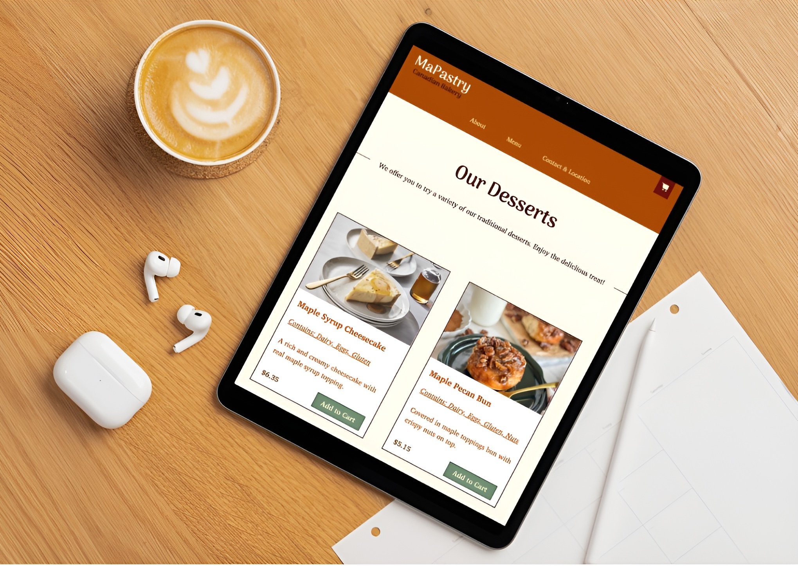
UI Design • Front-End • 2026Text Elements
Headings
Sample code:
<h2>Heading Level 2</h2>
<h3>Heading Level 3</h3>
<h4>Heading Level 4</h4>
<h5>Heading Level 5</h5>
Rendered element:
Heading Level 2
Heading Level 3
Heading Level 4
Heading Level 5
Paragraphs
Sample code:
<p>A responsive bakery website that showcases maple-themed products, allows users to browse items, view details, and place orders through an intuitive cart and checkout experience.</p>
Rendered element:
A responsive bakery website that showcases maple-themed products, allows users to browse items, view details, and place orders through an intuitive cart and checkout experience.
Combined Elements
Main Navigation
Sample Code:
<nav class = "main-nav">
<a href = "#" class = "nav-link">work</a>
<a href = "#" class = "nav-link">resume</a>
<a href = "#" class = "nav-link">about</a>
<a href = "#" class = "nav-link">contacts</a>
</nav>
Rendered element:
About Me
Bio
Hey, I'm Max — a UI designer and front-end developer based in Vancouver, currently studying at SFU. I'm interested in turning ideas into experiences that feel natural, structured, and alive, where users can move through a website almost like a story. My work focuses on clarity and interaction, shaping how people understand and connect with digital spaces. I believe design should speak for itself—quietly guiding, expressing values, and creating something meaningful beyond just functionality.
Projects
"To Dye For" — Designing the Microsite
Intro
The goal of this project was to transltate the To Dye For exhibition by TexielMuseum into a digital microsite that communicaties voisuaъ idenitity and narrative. The aim was to Create an experience that reflects the material, cultural, and emotional qualities of the exhibition in a intuive and engaging way.
Research and Exploration
The process began with visual exploration, where our team researched experimental typography, partcularly the work of Wolfgang Weingart. Through a series of poster designs, we explored asymmetry, typographic rhythm, and collage to establish a visual language. This stage helped define how structure and expression could coexist, forming the foundation for the microsite's design.
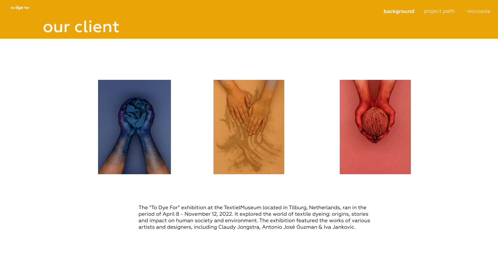
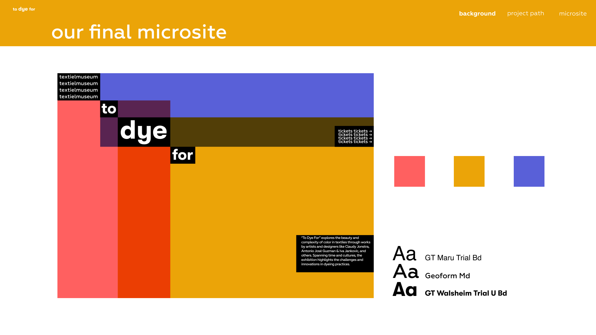
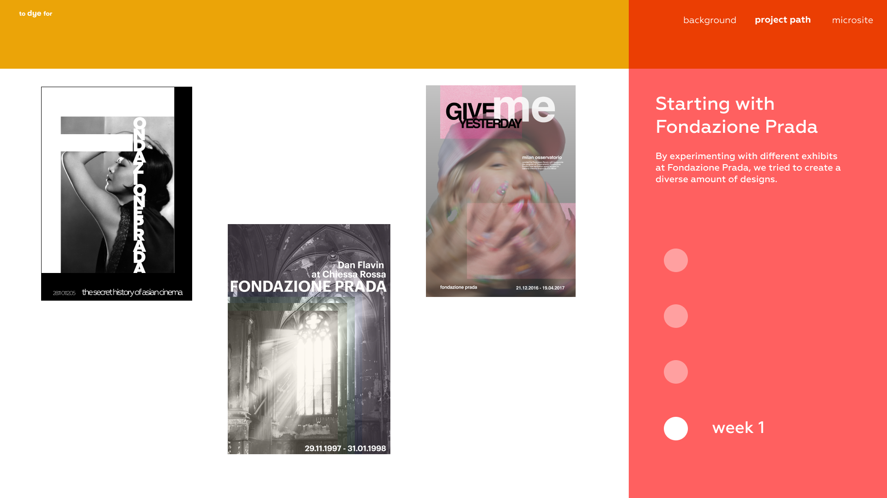
As the project developed, we shifted focus to the exhibition itself, researching its themes and refining our approach. We identified key design principles, including transforming typography into visual elements, using collage to create structure, and applying selective color to Guide attention. These decisions allowed us to connect the physical qualities of textiles and dyeing processes with a digital interface.
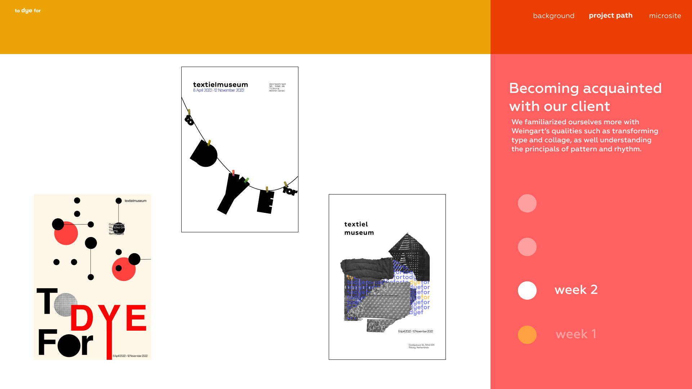
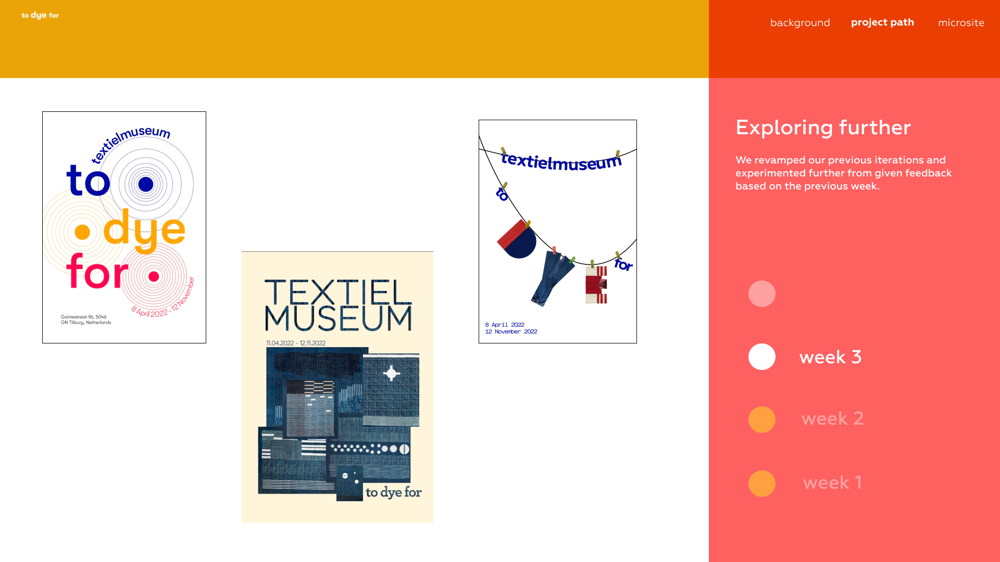
Developing a Microsite
In the microsite phase, we created multiple wireframes and prototypes to test layout, navigation, and interaction. This iterative process helped us evaluate what felt intuitve and what disrupted the user experience. We selected and refined a direction that balanced expressive visuals with clarity and usability.

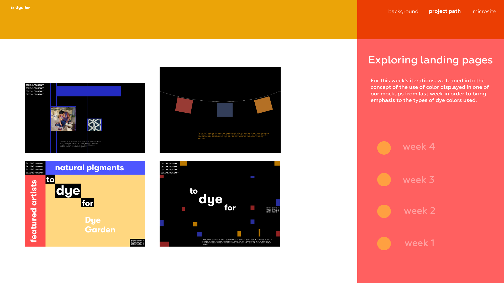
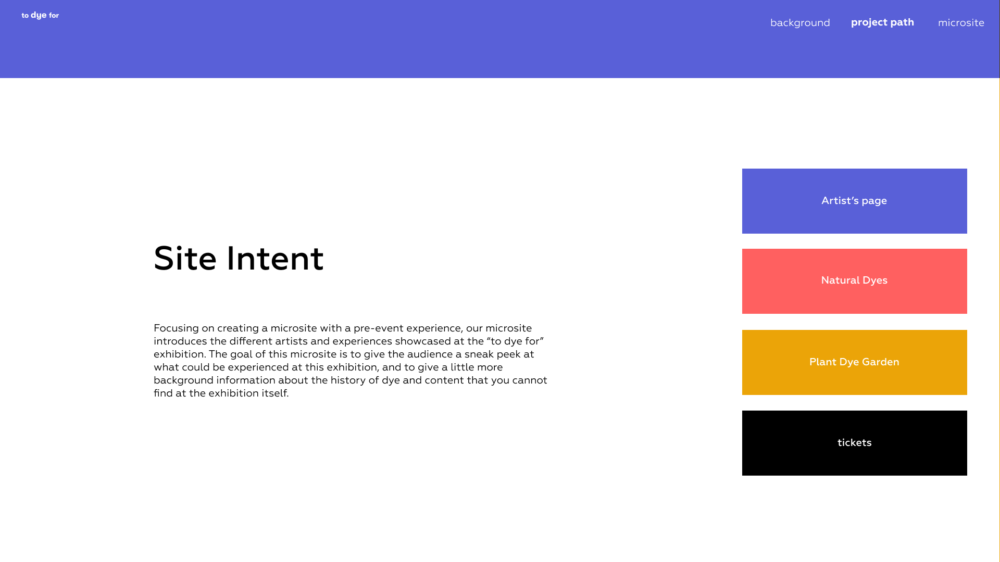
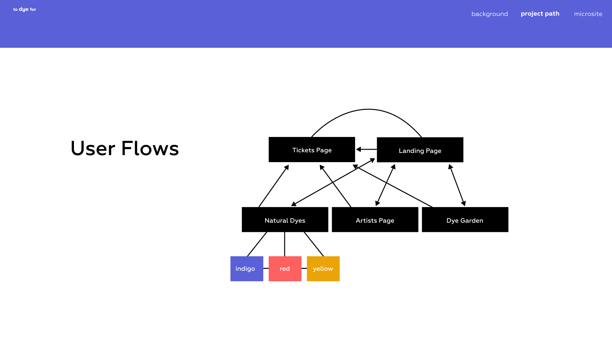
Reflection
This project strengthened my ability to design collaboratively while maintaining a consistent visual direction. I learned to balance creative expression with usability, especially when translating a physical exhibition into a digital experience. Through research and iteration, I became more confident in making design decisions based on context rather than aesthetics alone. Working with my team highlighted the importance of clear communication and shared ownership in the design process. It reinforced my belief that thoughtful design can guide attention, communicate mood, and create a meaningful narrative for users.
If I were to approach a similar project again, I would spend more time researching how physical exhibitions translate into digital environments, allowing for stronger and more informed design decisions from the start.
MaPastry Bakery Website
Intro
The goal of this project was to design a microsite for MaPastry, an imaginary Canadian bakery that uses maple syrup as its signature element to represent national food culture. The intention was to create a digital experience that feels warm, inviting, and culturally grounded, while remaining clear and easy to navigate for both local and international audiences.
Research and Development
The process began with developing the brand identity. I explored how MaPastry could communicate comfort, tradition and welcoming atmosphere through visuals. This included selecting a warm, earth-toned color palette inspired by baking and natural materials, and combining expressive and readable typography to balance personality with clarity. I also experimented with the landing and About Us pages, refining the elements that tell a story about MaPastry, brand's values, what is behind the process of producing maple syrup, allowing user to better understand the concept and Identity of MaPastry.
As the project developed, I focused on structuring content and designing layouts that guide users through the website in a natural and intuitive way, ensuring that key information such as products and MaPastry's brand story is easily accessible. I continued to refine hierarchy, spacing and interactive elements to support usability and visual consistency across all of the website pages.
The final outcome is a website coded with HTML/CSS that balances warmth and structure, translating a cultural concept into a clear and meaningful digital experience. This project strengthened my understanding of how to connect branding with user experience, and how to design interfaces that communicate function and identity.
Reflection
Through this project, I learned how to balance visual expression with usability, especially when translating a cultural concept into a digital interface. Through exploration and iteration, I became more confident in making design decisions based on design principles rather than just aesthetics. It reinforced my understanding that thoughtful design can guide attention, communicate values, and shape how users engage with a digital product.
If I were to approach a similar project again, I would spend more time exploring layout variations and testing how different structures affect user experience. This would allow me to make more confident design decisions earlier in the process and create a stronger connection between the brand identity and its digital presentation.
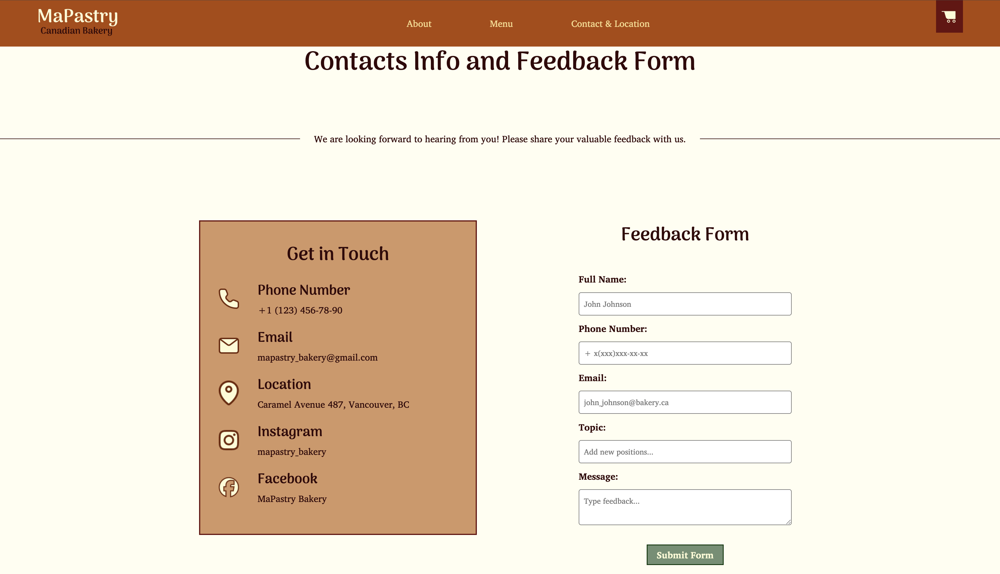

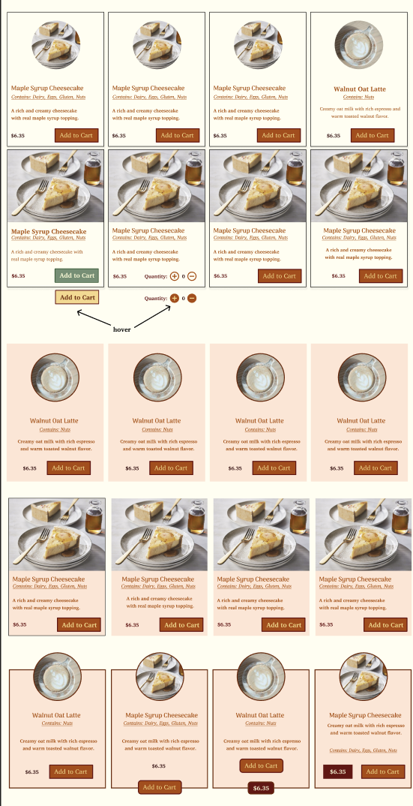
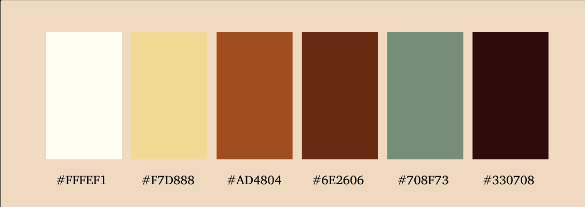
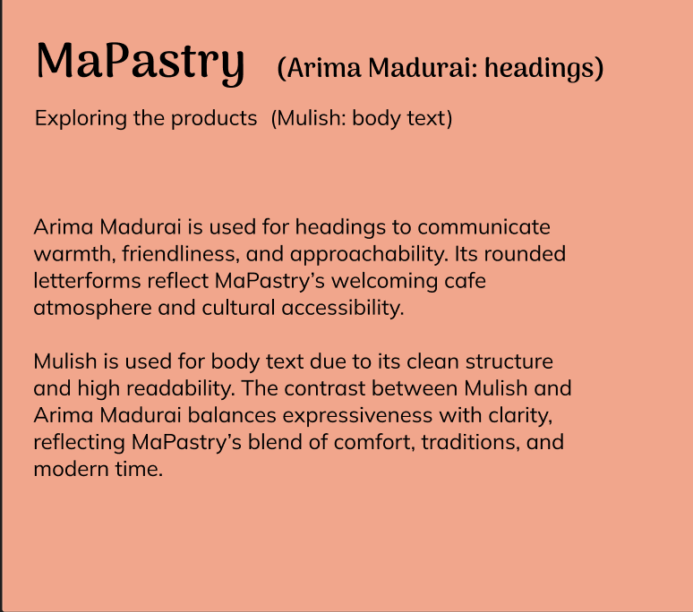